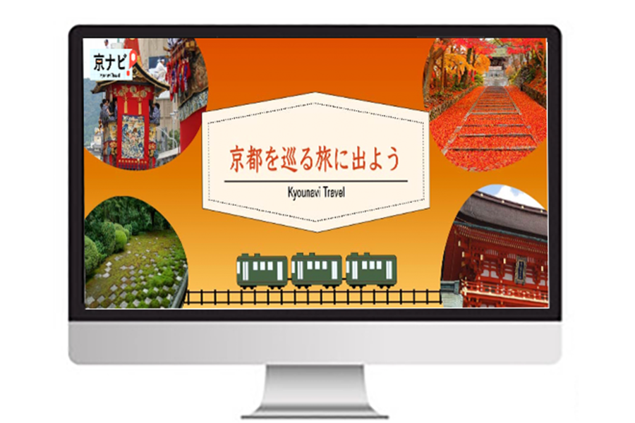
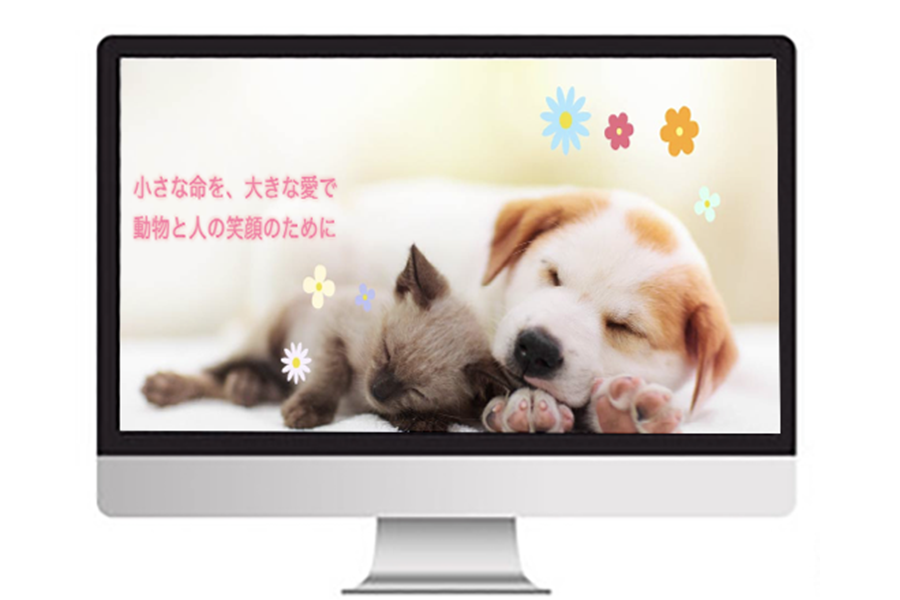

架空カフェTANEMAKIのサイト
- 目的：カフェ情報を分かりやすく伝え、来店を促すため
- ターゲット：20〜30代の女性
- 工夫した点：「自然・落ち着き」をテーマに、グリーンやブラウンで店の雰囲気が伝わるデザインを心がけました。メニュー表示は 商品名と価格の間を点線で繋ぎ見やすくし、人気の商品は写真をつけて視覚的にわかりやすくデザインしました。スマホで見た際、見やすいように縦並びのレイアウトを意識しました。
- 使用ツール/言語：Visual Studio Code・Ilustrator・Photoshop/HTML/CSS
- 制作期間：約3日間

架空旅行会社京ナビのサイト
- 目的：京都旅行を考えている方に、行き先選びの手助けをする
- ターゲット：京都旅行を考えている方、旅行計画プランを知りたい方
- 工夫した点：主に深めの赤色を使用し、京都らしさや日本の雰囲気を出せるように意識しました。ナビゲーションをシンプルに整理し、情報を探しやすくしました。 ツアーの案内はカード風のデザインにし写真つきで見やすく、比較しやすいようにしました。
- 使用ツール/言語：Visual Studio Code・Ilustrator・Photoshop/HTML/CSS
- 制作期間：約4日間

架空病院こはる動物病院のサイト
- 目的：安心して来院できる雰囲気作り、診察案内・内容を分かりやすく掲載
- ターゲット：犬・猫を飼っている方、初診で病院を探している方
- 工夫した点：「こはる動物病院」なので、その名前のイメージからピンクや緑で春を感じる色合いにし、気軽にご来院してもらうため 優しい雰囲気になるよう意識しました。スマホで見た際、ナビゲーションを見やすくするためにハンバガーメニューで整理しました。
- 使用ツール/言語：Visual Studio Code・Photoshop・Illustrator/HTML/CSS
- 制作期間：約4日間